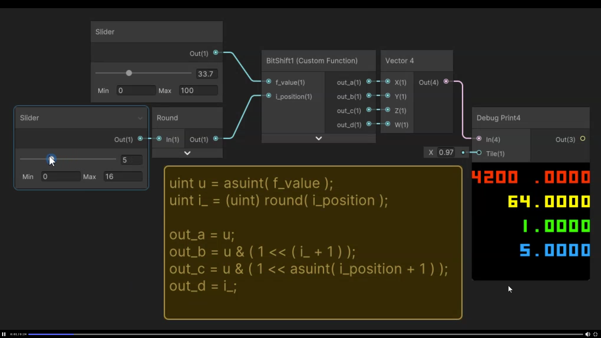
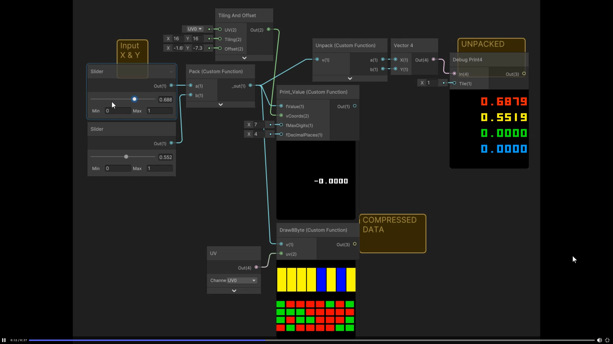

Tutorial · WebGL 2 · GLSL 3.0
Standard splat maps cap at 4 layers and burn through GPU sampler slots. Nukadelic showed up in Discord and explained how to side-step the limit by smashing two 16-bit values into one 32-bit float per RGBA channel. This page is the explanation, the live demo, the credits, and a mirror of the 2015 Stack Overflow post the whole thing is built on.
01 · The problem
The classic Unity-style splat-map approach assigns one terrain layer per channel of an RGBA texture: R = dirt, G = grass, B = rock, A = sand. The fragment shader reads the splat map and uses each channel as the blend weight for that layer's texture.
It works. It also caps at four layers per splat map. Want eight? Stack two splat maps and four more texture samples — now you've burned through nine sampler slots just for the ground. The URP TerrainLit shader-graph template caps out at sixteen texture samplers, full stop. Real games want twenty, thirty, fifty distinct ground materials. The math doesn't work.
did you know shadergraphs have a limit of 16 texture samplers
Duck [SCUG]5/26/2026 8:00 PM
The way out has two pieces. The first is a different kind of texture binding. The second is a slightly evil little encoding trick to make that binding pay off.
02 · The trick, part 1
sampler2DArray.A texture array is a stack of identically-sized images bound as a single GPU resource. You sample it with a 3-component coordinate — uv.xy picks a pixel like normal, and a third integer z picks which layer. The whole stack costs one sampler slot, regardless of whether it holds 8 layers or 256.
GLSL 3.0 — fragmentuniform sampler2DArray terrainTextures; // 32 textures, one binding
vec3 grass = texture(terrainTextures, vec3(uv, 5.0)).rgb;
vec3 rock = texture(terrainTextures, vec3(uv, 11.0)).rgb;
That alone fixes the sampler accounting. But the splat map is still RGBA — still four blend weights. You can read from 256 layers; you can only blend 4 of them per pixel unless you find more room in the control map.
This is where it gets clever.
03 · The trick, part 2
A 32-bit float has 32 bits. A 16-bit integer needs 16. So one float can hold two 16-bit values if you're willing to bypass the float's numeric meaning and just treat it as a bag of bits — write the bits with integer ops, ship them through a FloatType texture, and read them back as integers on the other side.
That gives you eight 16-bit slots per RGBA pixel. Nukadelic's layout — the one that ends up in the demo on this page — packs them like this:
red channel = weights 0 + 1, green channel = weights 2 + 3, blue channel = index 0 + index 1, alpha channel = index 2 + index 3. this allows to blend any 4 textures from the array2d — regardless of the amount of the terrain layers
Nukadelic5/27/2026 11:25 AM
The crucial property: the four IDs in the B/A channels can be any values in the array, so different pixels of the map can mix completely different sets of four textures. Across the whole terrain you might touch all 32 (or 256, or however many you packed) — but a single pixel only ever blends four. That's the same constraint AAA terrain shaders run under.

33.7 at integer position 5 packed into four debug outputs. Same math as the GLSL version, different toolchain.04 · The math
The 2015 Stack Overflow post that this technique traces back to (mirrored further down this page) phrases it in HLSL. The WebGL2 / Three.js demo uses the GLSL 3.0 equivalent. Same math, different keyword spellings:
HLSL — Adam Miles, SO 2015// Pack
float a = 0.45;
float b = 0.55;
uint aS = a * 0xFFFF;
uint bS = b * 0xFFFF;
uint packed = (aS << 16) | (bS & 0xFFFF);
float f = asfloat(packed);
// Unpack
uint u = asuint(f);
float a2 = (u >> 16) / 65535.0;
float b2 = (u & 0xFFFF) / 65535.0;
GLSL 3.0 — this demo// Pack (JS side, written to a Float32 texture)
function packIntsToFloat(a, b){
_u32[0] = (a << 16) | (b & 0xFFFF);
return _f32[0];
}
// Unpack (fragment shader)
void unpackFloat(float p, out float a, out float b){
uint u = floatBitsToUint(p);
a = float(u >> 16u) / 65535.0;
b = float(u & 0xFFFFu) / 65535.0;
}
The HLSL keywords asuint / asfloat are bit-reinterprets — they take 32 bits and re-read them as the other type without changing a single bit. GLSL 3.0 names the same operation floatBitsToUint / uintBitsToFloat. JavaScript doesn't have such operators directly, so the demo does it with a 4-byte ArrayBuffer aliased by both a Uint32Array and a Float32Array — write through one view, read back through the other.
For pure integer pairs (the layer IDs, where you don't want any rescaling), the JS function above is enough. For 0–1 float pairs (the blend weights), one extra step quantizes each to a 16-bit integer first:
JSfunction packFloatsToFloat(a, b){
return packIntsToFloat(Math.floor(a * 65535), Math.floor(b * 65535));
}

0.688 & 0.552 survive as 0.6879 & 0.5519 — the round-off comes from quantizing to 16-bit integers (1 / 65535 ≈ 1.5 × 10⁻⁵). Plenty of precision for blend weights.05 · The CPU-side pipeline
The CPU work happens once when the splat map is generated (and again whenever the user re-rolls it). Four steps:
DataArrayTextureAllocate one big Uint8Array sized texRes × texRes × 4 × N, then write each layer's RGBA pixels into its slice. Three.js's DataArrayTexture takes that buffer directly. In the demo the layers are generated procedurally with canvas patterns; in a real game they'd be baked PBR textures loaded from disk.
JSconst arrayData = new Uint8Array(TEX_RES * TEX_RES * 4 * NUM_TEXTURES);
// ... draw each texture into arrayData[t * TEX_RES * TEX_RES * 4 + ...]
const textureArray = new THREE.DataArrayTexture(arrayData, TEX_RES, TEX_RES, NUM_TEXTURES);
textureArray.wrapS = textureArray.wrapT = THREE.RepeatWrapping;
textureArray.minFilter = THREE.LinearMipmapLinearFilter;
textureArray.magFilter = THREE.LinearFilter;
textureArray.generateMipmaps = true;
Before you can extract a top-4 you need to know the weight of every layer at every pixel. Allocate a temporary array sized W × H × N floats (yes, it's big — 512 × 512 × 32 = ~32 MB at Float32) and add weight to it splat by splat. The demo uses smoothstep falloff so the brush has a soft edge:
JSconst raw = new Float32Array(MAP_SIZE * MAP_SIZE * NUM_TEXTURES);
// Base layer 0 everywhere
for (let i = 0; i < MAP_SIZE * MAP_SIZE; i++)
raw[i * NUM_TEXTURES] = 1.0;
for (let s = 0; s < numSplats; s++) {
const cx = Math.random() * MAP_SIZE;
const cy = Math.random() * MAP_SIZE;
const radius = 10 + Math.random() * 50;
const tex = Math.floor(Math.random() * NUM_TEXTURES);
for (let y = ...; y <= ...; y++)
for (let x = ...; x <= ...; x++) {
const dist = Math.hypot(x - cx, y - cy);
if (dist < radius) {
let f = 1 - dist / radius;
f = f * f * (3 - 2 * f); // smoothstep
raw[(y * MAP_SIZE + x) * NUM_TEXTURES + tex] += f * 3.0;
}
}
}
This is the compression. For every pixel, list which layers have any weight at all, sort by weight descending, take the four heaviest, normalize them to sum to 1. The other twenty-eight layers' contributions at that pixel are discarded. This is the same compromise Unity's terrain pipeline makes (and you don't notice, because in practice no pixel ever blends more than a few materials at once).
JSfor (let i = 0; i < MAP_SIZE * MAP_SIZE; i++) {
const list = [];
for (let t = 0; t < NUM_TEXTURES; t++) {
const w = raw[i * NUM_TEXTURES + t];
if (w > 0) list.push({ idx: t, weight: w });
}
list.sort((a, b) => b.weight - a.weight);
const top = list.slice(0, 4);
while (top.length < 4) top.push({ idx: 0, weight: 0 });
const sum = top[0].weight + top[1].weight + top[2].weight + top[3].weight;
...
}
Float32 texturePack the four normalized weights into R/G and the four IDs into B/A using the helpers from the previous section:
JScontrolData[i * 4 + 0] = packFloatsToFloat(top[0].weight / sum, top[1].weight / sum);
controlData[i * 4 + 1] = packFloatsToFloat(top[2].weight / sum, top[3].weight / sum);
controlData[i * 4 + 2] = packIntsToFloat(top[0].idx, top[1].idx);
controlData[i * 4 + 3] = packIntsToFloat(top[2].idx, top[3].idx);
Wrap in a DataTexture with RGBAFormat + FloatType, set the filtering to NearestFilter (see the gotcha section below) and upload. That's the entire CPU side.
06 · The GPU-side render
Per pixel, the shader does six things: sample the control map, unpack the four weights, unpack the four IDs, sample the texture array four times, multiply each sample by its weight, and sum. That's it.
GLSL 3.0 — fragment shaderprecision highp float;
precision highp int;
precision highp sampler2DArray;
uniform sampler2D controlMap; // the Float32 bit-packed splat
uniform sampler2DArray terrainTextures; // all N textures, 1 binding
uniform float uTiling;
in vec2 vUv;
out vec4 fragColor;
void unpackFloat(float p, out float a, out float b){
uint u = floatBitsToUint(p);
a = float(u >> 16u) / 65535.0;
b = float(u & 0xFFFFu) / 65535.0;
}
void unpackInt(float p, out float a, out float b){
uint u = floatBitsToUint(p);
a = float(u >> 16u);
b = float(u & 0xFFFFu);
}
void main(){
vec4 data = texture(controlMap, vUv);
float w0, w1, w2, w3, i0, i1, i2, i3;
unpackFloat(data.r, w0, w1);
unpackFloat(data.g, w2, w3);
unpackInt(data.b, i0, i1);
unpackInt(data.a, i2, i3);
vec2 tileUv = vUv * uTiling;
vec3 col = texture(terrainTextures, vec3(tileUv, i0)).rgb * w0
+ texture(terrainTextures, vec3(tileUv, i1)).rgb * w1
+ texture(terrainTextures, vec3(tileUv, i2)).rgb * w2
+ texture(terrainTextures, vec3(tileUv, i3)).rgb * w3;
fragColor = vec4(col, 1.0);
}
The four texture() calls all sample the same physical binding — the texture array — just at different z indices. Total sampler-slot cost: 2 (one for the control map, one for the array). Same fragment shader scales from 4 layers in the array to 4,000 with zero change.
07 · The gotcha
Trap
You cannot let the GPU linearly interpolate a bit-packed texture. If it blends a pixel containing layer ID 5 with a neighbouring pixel containing layer ID 27, the bits in between are not a valid packed pair — they decode to garbage like ID 16 and ID 3, neither of which were actually painted there.
The fix is one line on the JS side:
JScontrolMap.magFilter = controlMap.minFilter = THREE.NearestFilter;
Nearest-neighbour sampling means the GPU snaps to the nearest control-map pixel and reads its bits intact. The catch is that you lose smooth blending across control-map pixel boundaries — material transitions look blocky if the control map is low-resolution.
The honest fix (used in shipping AAA terrain shaders): the fragment shader manually fetches the four nearest control-map texels itself, unpacks each one independently, samples the texture array for all of them, and does the bilinear blend in math at the very end. More work in the shader, but the visual smoothness comes back. The demo on this page doesn't bother because the control map is 512² over a 200-unit plane — the pixels are small enough that you'd have to zoom in hard to see the seams.
08 · The result
32 procedurally-generated textures, 200 random paint splats, top-4 extraction per pixel, packed into a 512² RGBA / Float32 control map. One sampler binding holds all 32 textures; one binding holds the splat map. The fragment shader does the same six operations as the snippet above.
Drag to orbit. Hover the right-hand palette to isolate a layer. Click to lock isolation. Hit Show layer indices to swap every texture for a giant index number — useful for tracing which IDs the bit-pack landed on.
09 · Origin story
The technique on this page didn't come out of a paper or a tutorial. It came out of Duck (SCUG) hitting Unity's sampler wall while working on a procgen terrain shader, and Nukadelic walking into the Discord the next morning with the answer and the artefacts to back it up. Trimmed log:
Duck [SCUG]5/26/2026 7:30 PM
argh oh man i was hoping the new terrain nodes would work but i have to use the stupid terrainlit shadergraph template stupid
Duck [SCUG]5/26/2026 8:03 PM
if i want 8 terrain layers i have to use this. did you know shadergraphs have a limit of 16 texture samplers
!Tront [DEMI]5/26/2026 8:00 PM
gotta pack those 4 channels. maybe split it even more than that
Duck [SCUG]5/26/2026 8:03 PM
how was nuka able to do unlimited layers?
!Tront [DEMI]5/26/2026 8:16 PM
packing like crazy he literally pasted a link that showed how it was done I can only vaguely remember how. was it 255 channels or something IDK what it was something with IDs or something. @Nukadelic help us please
Nukadelic5/27/2026 8:27 AM
pretty much yea, it gets a bit convoluted when u would want to blend multiple layers at the same point (road + dirt layer → blends into grass + snow). the amount of textures i was able to pack was limited to the max texture resolution that the Quest2 could handle + how much resolution did they want to have the terrain texture. i dont have the source code — here is what was able to find from other channels that i shared this on before:
uint u = asuint( v );uint i1 = ( u & 0x0000000F );uint i2 = ( u & 0x000000F0 );uint i3 = ( u & 0x00000F00 );
this is just the node to test the binary packing, not the actual binary packing itself. pretty sure this was it: Pack two floats within range into one float. this might also be helpful — somewhat of a hack to have better looking textures without making them 4K. [attached TextureNoTile.zip + message.txt]
Nukadelic5/27/2026 11:25 AM
np, the float packing is not really needed here if you are targeting the desktop — i basically used to pack multiple tex2d_array indexs in one paint texture for the quest. so in the end it would be something like — red channel = weights 0 + 1, green channel = weights 2 + 3, blue channel = index 0 + index 1, alpha channel = index 2 + index 3. this allows to blend any 4 textures from the array2d — regardless of the amount of the terrain layers.
!Tront [DEMI]5/27/2026 1:45 PM
damn thats so smart
Duck [SCUG]5/27/2026 3:26 PM
woaghh that's cool. i'm guessing the packing happened in the control map? or maps probably. also that print node is sweet
asfloat / asuint pair-packing pattern, answered on Stack Overflow Oct 3 2015. Mirrored further down this page in case SO ever goes dark.10 · Source artefact
This is the message.txt Nukadelic dropped into Discord on 5/27/2026 — the Unreal custom-function node he used to debug-visualize the binary packing on a real game. It's not the production packer (he lost that source); it's the test rig that proves the bits are landing where they should. 8 nibbles unpacked from one uint, drawn as 8 sliders showing each 4-bit value as a 0–1 float, plus a bit-grid showing each individual bit lit green or red.
The mechanics are identical to the JS / GLSL versions above — asuint takes a float as a bag of bits, & masks individual nibbles out, the row of debug visualizations confirms the round-trip. It just happens to live in Unreal's HLSL dialect instead of WebGL's GLSL.
HLSL — Nukadelic, Unreal custom function, 2024-ishuint u = asuint( v );
uint i1 = ( u & 0x0000000F );
uint i2 = ( u & 0x000000F0 );
uint i3 = ( u & 0x00000F00 );
uint i4 = ( u & 0x0000F000 );
uint i5 = ( u & 0x000F0000 );
uint i6 = ( u & 0x00F00000 );
uint i7 = ( u & 0x0F000000 );
uint i8 = ( u & 0xF0000000 );
float a1 = ( i1 ) / 15.0;
float a2 = ( i2 ) / 15.0;
float a3 = ( i3 ) / 15.0;
float a4 = ( i4 ) / 15.0;
float a5 = ( i5 ) / 15.0;
float a6 = ( i6 ) / 15.0;
float a7 = ( i7 ) / 15.0;
float a8 = ( i8 ) / 15.0;
uint b1 = i1;
uint b2 = i2 >> 4;
uint b3 = i3 >> 8;
uint b4 = i4 >> 12;
uint b5 = i5 >> 16;
uint b6 = i6 >> 20;
uint b7 = i7 >> 24;
uint b8 = i8 >> 28;
// ... 8-column UV-space visualization
// row 1: 8 sliders, each showing a nibble as a 0-1 lerp
// rows 2-5: 4-bit grid per column, each cell lit if (u & (1 << n)) != 0
The full file (with the UV-space drawing code that paints the debug strips) is 101 lines and shipped with the repo at nuka-message.txt — see the repo for the literal source.
11 · Archive
The post Nukadelic linked is the ancestor of this whole technique. Mirrored verbatim below — title, both answers (Adam Miles' accepted high-vote one and SmugLispWeenie's counterpoint), the comment thread, the score, the byline — stripped of the nav clutter and the unrelated "Hot Network Questions" sidebar. Source: stackoverflow.com/q/32915724, scraped 2026-05-28.
In HLSL, how would I go about packing two floats within the range of 0–1 into one float with an optimal precision. This would be incredibly useful to compress my GBuffer further.
HLSL//Packing
float a = 0.45;
float b = 0.55;
uint aScaled = a * 0xFFFF;
uint bScaled = b * 0xFFFF;
uint abPacked = (aScaled << 16) | (bScaled & 0xFFFF);
float finalFloat = asfloat(abPacked);
//Unpacking
float inputFloat = finalFloat;
uint uintInput = asuint(inputFloat);
float aUnpacked = (uintInput >> 16) / 65535.0f;
float bUnpacked = (uintInput & 0xFFFF) / 65535.0f;
Converting floating point numbers to fixed point integers is an error prone idea, due to floats covering much larger magnitudes. Say unpacking sRGB will give you pow(255, 2.2) values, which are larger than 0xffff, and you will need several times that amount for robust HDR. Generally fixed point code is very fragile, obfuscated and a nightmare to debug. People invented floats for a good reason.
There are several 16-bit float formats. IEEE 16-bit float one is optimized for numbers between -1.0 to 1.0, but also support numbers up to 0x10000, just in case you need HDR, still so you will need to normalize your larger floats for it. Then there is bfloat16, which behaves like normal 32-bit float, just with less precision. IEEE 16-bit floats are widely supported by modern CPUs and GPUs, and can also be converted quickly even in software. bfloat16 is just gaining popularity, so you will have to research if it is suitable for your needs. Finally you can introduce your own 16-bit float format, using integer log function, which is provided by most CPUs as a single instruction.
12 · Further reading
floatBitsToUint — the bit-reinterpret primitive that makes shader-side unpacking work.message.txt.If you ship something built on this, drop a note in the Discord. The technique deserves more sunlight than it's had.
Nice. The "optimal precision" part is clearly bogus, since the number of available bits gets halved. So whatever can be stored in what's left can be considered 'optimal'.
Yeah, I took it to mean "don't waste any bits" rather than "do the impossible"!
Thank you!!! How does this answer only have 3 upvotes!?